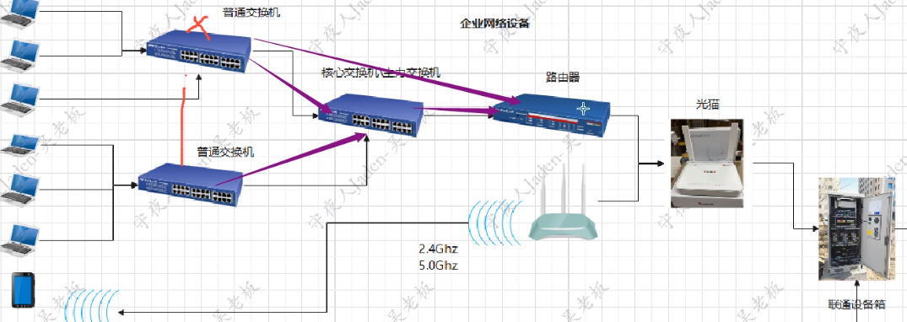
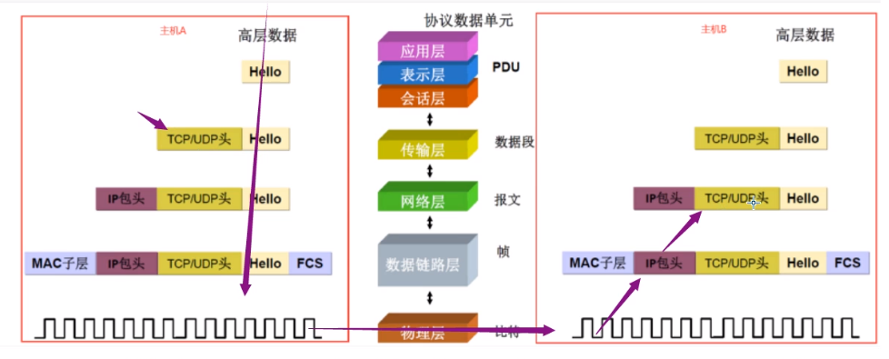
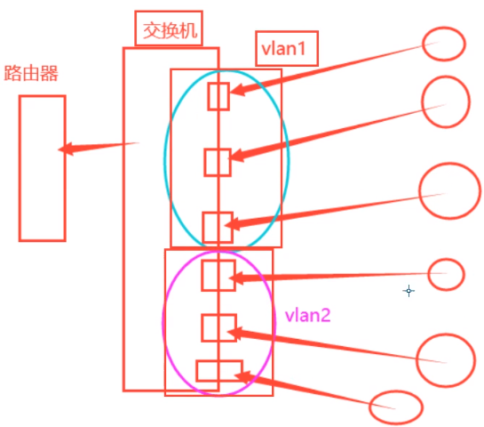

网络设备

文章目录
光猫
一端连接运营商的入户线缆，一般是光纤，一端连接你自己的路由器。是一个运营商到你自己设备的桥梁。
网卡
网卡是工作在第二层链路层的网络组件，是局域网中连接计算机和传输介质的接口，不仅能实现与局域网传输介质之间的物理连接和电信号匹配，还涉及帧的发送与接收、帧的封装与拆封、介质访问控制、数据的编码与解码以及数据缓存的功能等。
路由器
组件
- 路由器 WAN 口 – 连接外网络/光猫
- 路由器LAN 口 – 连接交换机 或者终端设备
- 电源指示灯
交换机
为什么要有交换机呢？
大家看看路由器只有一个 LAN 口， 如果要接网线，也只能接入一台电脑， 如果公司有几百号人，每个人都要上网，一个路由器肯定是不够的，所以这里交换机相当于是一个插排， 可以扩展 LAN口数量
交换机有很多的插口，可以插入多个终端设备 参考企业交换机 48插口
公司的人数决定了使用的交换机端口数量，如果人数在3-14人并且长期内员工数量变化不大，可以选择24口交换机，人数超过15人以上，而且还有其他网络设备的情况下，这时候需要对端口数量做一定的冗余，可以选择48口交换机。
像插排一样，交换机还能继续接入交换机，最终可以形成一个树形结构
网络拓扑图例如：

企业级路由器一般都用 h3c ,质量比较好
常见硬件厂商像华为，中兴
网络协议
物理层
OSI分层（7层）
物理层、数据链路层、网络层、传输层、会话层、表示层、应用层
TCP/IP分层（4层）
网络接口层、网络层、传输层、应用层
五层协议（5层）
物理层、数据链路层、网络层、传输层、应用层
osi分为7层模型，不同的层使用不同的协议
不同的协议都会对数据格式进行加工
- 物理层：解决信号转换的问题，基本都是数字信号，二进制数据控制的电路信号、电磁信号：电信号、光纤光信号：光纤网卡可以将电 信号转换为光信号)、电磁波。这个基本不需要我们关注，设备厂商就帮我们解决了。
2、数据链接层 每块网卡（有线、无线、蓝牙等）每块网卡出厂时都被烧制上一个世界唯一的mac地址，长度为48位2进制，通常由12位16进制数表示（前 六位是厂商编号，后六位是流水线号)，通过mac地址就可以查询到它对应的厂商。这个mac地址是入网许可证，没有mac地址，就不能 上网。
相当于物理硬件的身份证
- 发送的数据，在这一层就加上物理地址
- 网络层
- 数据： 网络层在 这一层加上 IP 包头部
- 传输层 s
- 在这一层加上 TCP、UDP 头
-
会话层
-
表示层
-
应用层
- 应用自定义的原始数据

arp协议作用
arp协议在哪层
arp协议在TCP/IP模型中属于IP层（网络层），在OSI模型中属于链路层。
ARP协议是数据进行网络传输过程中，通过IP地址向MAC地址的转换，解决网络层和物理层衔接问题
网络连接相关命令
|
|
state 的类型
- Establish 建立了连接
|
|
wireshark 软件抓包分析
|
|
chgrp 这个命令改变/usr/bin/dumpcap（dumpcap是一个用于捕获网络流量的工具，是wireshark的组件）的组所有权为wireshark组。这意味着dumpcap现在属于wireshark组
chmod 4755 的意思： chmod是“change mode”的缩写，用于改变文件或目录的权限。4755是一个特殊的权限设置：
|
|
sudo gpasswd -a lyr wireshark 将用户添加到 wireshark 工作组，gpasswd 是用来管理 /etc/group 和 /etc/gshadow 文件的工具，将用户添加到组中
子网掩码和静态IP
ip地址就是用来划分广播域的，划分 交换机下面的网络段, 同一个网段的主机采用广播的形式来通信， 交换机起到的作用就是广播网络信息
ip 地址 段由网络工程师划分
例如： 192.168.3.0-255
前面的 192.168.3 是网络位，后面的 0-255是主机位(给主机分配的ip地址是多少)
|
|
子网掩码是用来判断ip地址是否在同一个子网络的
inet 172.16.10.1 netmask 255.255.255.0
例如
|
|
每个位置进行与运算得到
172.16.10.0,
和
inet 172.16.10.2 netmask 255.255.255.0
|
|
每个位置进行与运算得到
172.16.10.0,
不同ip 只要和同一个 netmask 与运算，只要得到的结果一致，就表示这些ip是在一个 网段下
上面其实还有一个写法叫做
给一个 ip地址 192.168.2.110 和 255.255.255.0 也可以写成 192.168.2.110/24 这种形式
/24 表示 子网掩码的简写， 前面有24个1 ，后面8个0的意思
/24 这个子网掩码可以分配 2^8 也就是 256个 数字给 主机使用，但是 .0 和 .255的主机位是保留地址
.0 可以作为网络号，通过网络好可以找到对应网段的网络， .255 则是广播地址，所以 我们一般会说可用的ip地址由 256-2 = 254个
常见的子网掩码有
|
|
后面的 /num num越小, 表示网络位越小，主机位越大，能用的 ip地址量就越大
主机量为 $2^{32-num}-2$
同一个网段的ip地址，物理线路接通就可以互相通信，不同网段的ip地址，即便是物理线路接通，也不可以互相通信， 需要路由器才能互相通信！ 路由器能帮我们转发给对应网段的主机
练习题
|
|
结果不一致，不在一个网段上
我们电脑有 dhcp 服务(动态ip地址)， 连接路由器会自动向路由器获取一个 ip地址
我们如果设置固定ip的时候，可能会不同的主机申请同一个ip地址，会导致ip地址冲突(导致无法上网)，这个时候可以申请换一个ip就可以了。
我们设置子网掩码 的时候，掩码也不是随便写的，只能是下面几个值
|
|
linux 网络命令
1. 查看dns缓存
|
|
DNS记录类型有哪些
- A（Address）记录 将域名指向 IP 地址（Ipv4） MX（Mail Exchange）记录 邮件交换记录，用于电子邮件系统发邮件时根据收信人的地址后缀来定位邮件服务器
- CNAME（Canonical Name）记录 通常称别名解析，可实现将域名指向另一个域名或IP地址
- URL（Uniform Resource Locator）转发 网址转发，如果没有一个独立的IP地址或者有一个域名B，想在访问A域名时访问到B域名的内容，这时就可以通过URL转发来实现。URL转发可以转发到某一个目录或某一个文件上，而CName不可以
- NS（Name Server）记录 域名服务器记录，用来指定该域名由哪个DNS服务器来进行解析 AAAA记录
- 将域名指向 Ipv6 地址 TXT记录
- 文本记录
- PTR值（Pointer） 用于将一个IP地址映射到对应的域名，也可以看成是A记录的反向解析
- SRV记录 服务定位器，记录了哪台服务器提供了何种服务
- CAA（Certificate Authority Authorization）记录 认证机构授权，限定了特定域名颁发的证书和CA（证书颁发机构）之间的联系
ARP 协议
交换机图片参考 ]
ARP协议主要作用在交换机上
一个交换机 连接了局域网的多台电脑，如果一台电脑访问另一个内网的电脑的话。
所有主机的通信是靠mac地址才能通信，只有mac地址才是唯一的。
ip 地址是由交换机分配给机器的，有可能会有ip冲突的情况。
数据链路层要封装 mac地址，源mac和 目标mac
交换机并不知道 连着的机器的ip是什么， 所以 发送数据前，会发送一个 arp广播请求,不是这个ip的机器会丢弃arp的数据包， 如果是对应的机器，则机器将自己的ip地址发送给交换机【通过网络协议】
交换机就有mac和ip地址的映射关系了,叫做 arp缓存表，缓存时间是 15-45秒 不等
交换机-> 主机 （广播） 主机 -> 响应交换机 (单播)
|
|
arp欺骗原理： 通过发arp数据包发送给交换机进行混淆 ip和mac对应关系
形成数据劫持
不过不同网段的机器是没法广播的，可以用ip地址段来进行广播域划分，避免arp广播损耗资源，广播次数很多的情况下，容易网络堵塞
Tcpdump 数据包异常分析
|
|
|
|
nmap扫描
|
|
NAT 和桥接模式的区别
NAT (network address translation)
这种模式就是让虚拟系统借助NAT(网络地址转换)功能，通过宿主机器所在的网络来访问公网。
也就是说，使用NAT模式能够实现在虚拟的系统里面直接访问互联网。NAT模式下的虚拟系统的TCP/IP配置信息是由VMnet8(NAT)虚拟网络的DHCPserver提供的，无法进行手工改动，因此虚拟系统也就无法和本局域网中的其它真实主机进行通讯。採用NAT模式最大的优势是虚拟系统接入互联网很easy。仅仅需要宿主机器能访问互联网，不需配置IP地址，子网掩码，网关。可是DNS地址还是要依据实际情况配的。
桥接模式
在桥接模式下，VMWare虚拟出来的操作系统就像是局域网中一台独立的主机，它能够访问网内任何一台机器。
在桥接模式下，你必须手工为虚拟系统配置IP地址、子网掩码，并且还要和宿主机器处于同一网段，这样虚拟系统才干和宿主机器进行通信。
配置好网关和DNS的地址后。才能实现通过局域网的网关或路由器访问互联网。
桥接模式：虚机和物理主机可通信，可与外网通信。
打个简单的比方：
-
桥接模式下，本机电脑里就像带着一个交换机一样，本机电脑里的可以安装多个虚拟机，每隔虚拟机都可以由独立的IP，并且虚拟机和本机电脑要处在一个网段。
-
桥接模式和NAT模式，虚拟机都可以访问外网，若是只是实现上网功能的话，两者都可以。
假如做压力测试，在公司局域网内的某台服务器上安装多个虚拟机，要求虚拟机要有局域网相同网段的独立IP的话，就要选择桥接模式。
加入只是虚拟机和本机电脑通讯，不上外网，就可以选仅主机模式。
ikuai 路由器
软件路由器： 软路由 硬件路由器: 普通路由 企业路由器： 普通级路由 家用路由器 一般比较便宜
首先，软路由的价格更加便宜。具备强大性能和多种功能的高端硬路由的价格动辄上千，而用软路由来实现同样的效果可能只需要二三百来块钱，这差价我们可以用来升级我们的网络带宽或干其它更有意义的事情；其次，软路由的性能更强大。与传统硬路由的MIPS、ARM 平台处理器不同，软路由常使用的 X86/64 处理器有着更强劲的性能，带得动更多的插件。同时软路由可以配备更好的网卡，也保证了网络的稳定和更多设备的接入；最后，软路由的功能更加多样。配合丰富的软件生态，我们能在软路由上实现更多有趣的功能，比如离线下载、去广告、QOS、流量控制、多线路控制、链路负载均衡等，甚至可以根据自己的需求自行开发软件。
软路由也不是万能的，它也有一些缺点。首先，软路由的功耗更高。软路由因为硬件规格更高，所以它的功耗自然也就增加了，平均功率要比硬路由高 10-20W；其次，软路由的无线信号略逊。软路由在无线 WiFi 这个方面和硬路由可以说是云泥之别，硬路由有厂商专门设计的电路板布局、独立的 WiFi 信号放大装置、防止电子信号干扰的屏蔽罩等等，这些都是软路由不具备的配置；最后，软路由的学习成本更高。硬路由在厂商的多年开发设计下，各种操作配置趋向简易化，通过傻瓜式的操作我们就能完成基本的配置。而对于软路由来说，如果没有一点的网络基础和学习实践能力，并非所有人都能驾驭。
通过路由器可以控制网络访问
什么是AC接入点和 AP接入点
https://zhuanlan.zhihu.com/p/445334581
磁盘知识
- raid0
- raid1 2块硬盘互相备份
- raid5 3块硬盘记录，有一块硬盘记录数据块的值，提升速度
vlan是什么和作用
VLAN（Virtual Local Area Network）即虚拟局域网
vlan技术可以在 同一个交换机下,继续划分出多个虚拟子网络

vlan是通过逻辑手段进行隔离的,并不是交换机这种物理隔离,实现的同一个虚拟子网的机器可以互相通信,不同子网络的机器不能互相通信。
二层交换机: 只能够进行mac地址控制 三层交换机: 可以配置ip地址,带路由功能,但是不能够拨号上网 。
为什么会发明出 VLAN
早期以太网是一种基于CSMA/CD（Carrier Sense Multiple Access/Collision Detection）的共享通讯介质的数据网络通讯技术。当主机数目较多时会导致冲突严重、广播泛滥、性能显著下降甚至造成网络不可用等问题。通过二层设备实现LAN互连虽然可以解决冲突严重的问题，但仍然不能隔离广播报文和提升网络质量。
在这种情况下出现了VLAN技术。这种技术可以把一个LAN划分成多个逻辑的VLAN，每个VLAN是一个广播域，VLAN内的主机间通信就和在一个LAN内一样，而VLAN间则不能直接互通，广播报文就被限制在一个VLAN内。
文章作者 lyr
上次更新 2024-04-05